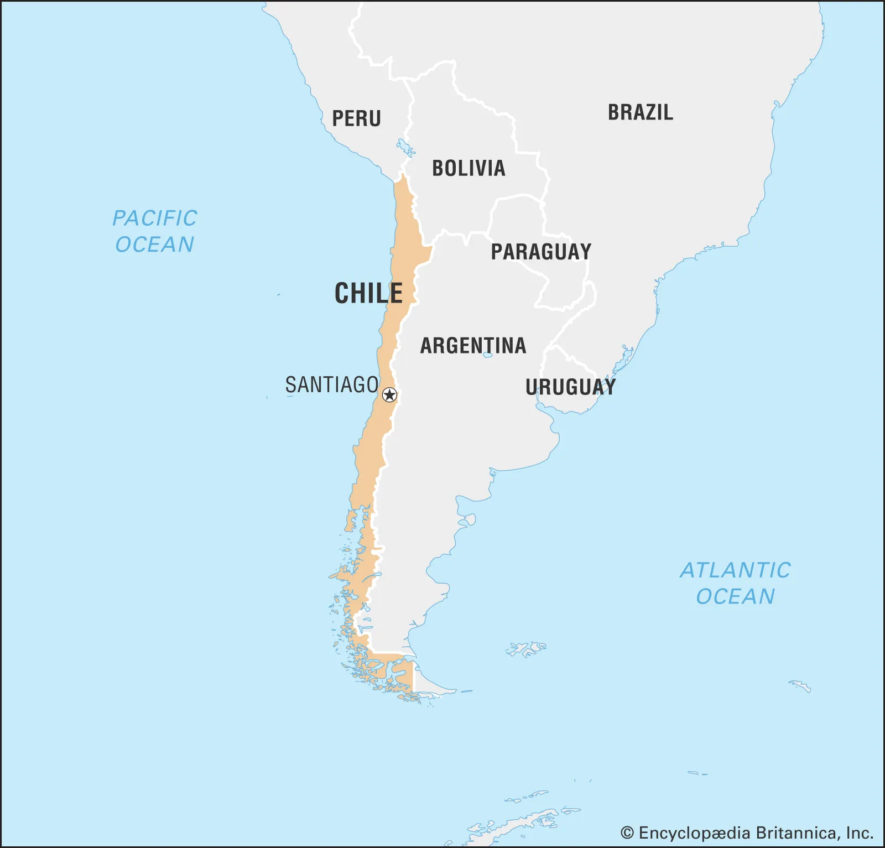
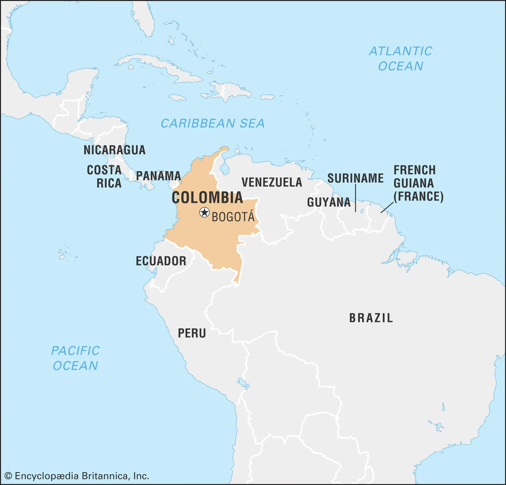

Countries
Argentina

Argentina is our first stop on the journey!!! We land in Buenos Aires and plan to be there for the first month (with a quick trip to Montevideo, Uruguay in the middle). In December we plan to slowly make our our way west towards Chile. We first hit Rosario, the third most populated city in the country. The city is known for its neoclassical art and incredible museums. We continue on to Cordoba, where we hope to be for at least a couple of weeks. Cordoba is the second most populated city in the country, falling just to Buenos Aires, and is considered to be a more youthful region given all of its universities. Yet, the city also carries a heritage of music, architecture, and much more. Kim’s family will be joining us for part of our time here. Our last big stop is Mendoza, aka wine country. Kim’s knowledge will for sure be tested here, as will our ability to budget and not spend too much at vineyards.
Chile
We arrive in Chile either right before or after New Years. That all depends on whether Mendoza or Santiago has a more exciting count down to 2023. In early January, fingers crossed, we will volunteer for a hostel for a month in Santiago. WorldPackers, similar to WOOF and Workaway, offers travelers room and board in return to working at the hostel for a couple hours a day. Not only will be this be kind to our bank accounts, but it’ll also be a great way to settle down for awhile and get the more local experience of the neighborhood we are staying in. We’ll get at least two days off a week which Kim and I will use for longer day or weekend trips. From there, we head south with a plan to slowly stop at beach towns on our way to Patagonia. We start the O-Trail, an eight day backpacking hike, in early March. Getting the campsite reservations were incredibly difficult and forced us to push back when we head up to Peru. That being said, we are so incredibly grateful to have a reservation at all, one cant hike the trail without reservations for every single campground. We plan to either buy or rent camping gear and warmer clothing in Puerto Natalas, a town right outside the start of the hike.
Peru

We will fly north to Peru after the end of our Patagonia expedition. This second half of the trip is still very abstract and will be more heavily tuned out in the next couple months. However, Machu Picchu Cusco, and Lima are definitely on our bucket list. We also hope to visit beach towns along the Pacific Oceans. Come back in a couple weeks for a more thorough plan.
Colombia
From Peru we will take a bus to Colombia. With even more abstract plans than Peru, I can’t write all too much about where we hope to go, but definitely plan on Bogota as well as other major Colombian cities. I’m sure many day hikes and weekend excursions to more rural areas will also be likely.